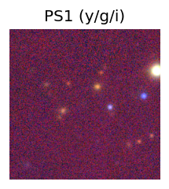
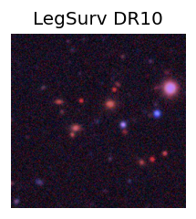
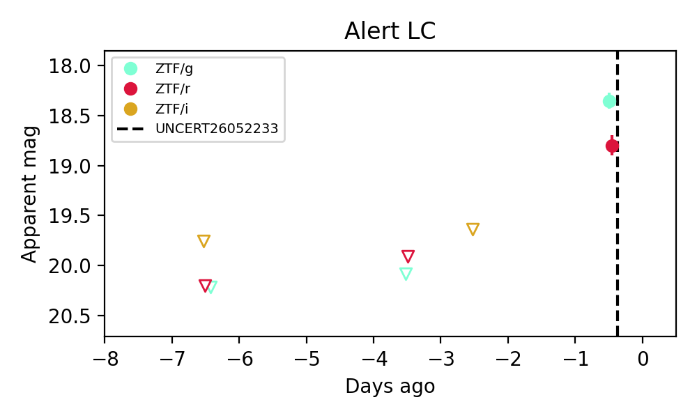

Candidate List 20260522Previous Day Next Day
Section 1: New Sources (age<1d) Section 2: Old (1-5d) sources observed last nightplaceholder
Section 1: New Afterglow/FBOT Cands Last Night (1)
1. [ZTF] ZTF26aaxutnf (FBOT?) [Back to Top] [Share] [Trigger Swift] [Fritz] [Lasair]RA, Dec: 170.71719, -6.22193 11h22m52.13s, -6d-13m-18.95sGalactic (l, b): 266.96416, 50.36079 ext(g-r) = 0.041


TESS: Sectors [ 9 36 45 46 63 72]
PS1: 0 sources in 3 arcsec
LegacySurvey: 1 sources in 3 arcsec Closest: d = 0.55 arcsec, 124.7 deg (east of north) photoz=0.57 (68% bounds 0.4, 0.78), type=REX peak abs mag = -24.31 (68% bounds -23.4, -25.14)

Extinction-corrected gr color:
From alerts: -0.49 +/- 0.13 mag
Rise Rate:
g: 0.57 mag/day
r: 0.37 mag/day
Fade Rate: